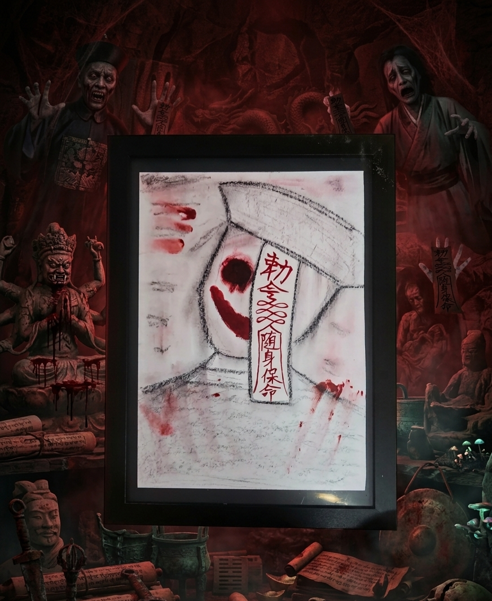

展示作品 Ⅱ ：「尸解仙」
馮 覚（Fung Jue）/ 1978年（※長城周辺の未公開遺構にて発見）

万里の長城の遺構から出土した、奇妙な絵。
札に書かれた「随身保命」とは、生者を生かす呪いではない。
男の背後には、今も「それ」がぴったりと張り付いている。
決してそこに書かれた文字を読んではいけない。。
▼ 下へスクロールして詳細を確認 ▼
呪 殺
怨 念
呪 殺
死 期
死 死 死
鬼 鬼
你 在 看 什 麼 ？
殺
禁 禁
視 札
不 能 逃
活 人 禁 地
命 啊 命 啊 命
魂 飛 魄 散
呪殺呪殺呪殺呪殺呪殺
死死死死死死死死死死
禍 禍 禍 禍 禍 禍 禍 禍 禍 禍
後悔後悔後悔後悔後悔
禍
阿鼻叫喚
不倶戴天
不倶戴天